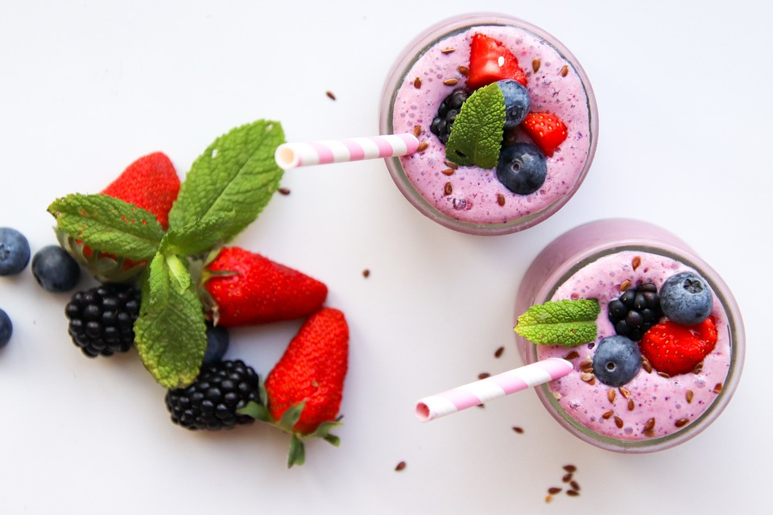

Beeren-Smoothie
| 40 g | Heidelbeeren |
| 85 g | Himbeeren |
| 230 g | Naturjoghurt |
| 1 TL | Honig |
Nährwerte für 1 Portion
| kcal | Eiweiß | Fett | Kohlenhydr. |
|---|---|---|---|
| 223 | 10 g | 9 g | 22 g |
Zubereitung
Geben Sie zunächst die frischen oder tiefgefrorenen Blueberries in einen Mixer und pürieren Sie sie kurz, bis sie leicht zerkleinert, aber noch stückig sind. Anschließend fügen Sie die Himbeeren hinzu. Diese können ebenfalls frisch oder gefroren sein, je nach Verfügbarkeit. Ergänzen Sie den Mix um den Honig – wie viel, hängt davon ab, wie süß Sie Ihr Getränk mögen. Beginnen Sie mit einem Esslöffel, Sie können später noch mehr hinzufügen, falls nötig. Schließlich kommt der cremige Joghurt dazu, der für eine angenehme Konsistenz sorgt und das Getränk sämig macht. Pürieren Sie nun alle Zutaten miteinander, bis eine feine, gleichmäßige Masse entsteht. Je nach Vorliebe können Sie die Dauer des Pürierens variieren – wer es gerne etwas stückiger mag, püriert kürzer, wer einen besonders feinen Smoothie bevorzugt, püriert länger. Sobald die gewünschte Konsistenz erreicht ist, gießen Sie die Mischung in ein großes Glas. Dieser Smoothie ist perfekt für ein leichtes Frühstück, da er sowohl erfrischend als auch sättigend ist, oder eignet sich als Snack zwischendurch. Wer es süßer mag, kann beim Abschmecken nach Bedarf noch etwas mehr Honig oder auch Zucker hinzufügen. Wenn Sie das Getränk etwas kälter möchten, empfiehlt es sich, die Beeren vorher einzufrieren oder einige Eiswürfel mit in den Mixer zu geben. Das Rezept ergibt eine Portion, die sich ideal in einem großen Glas servieren lässt. Möchten Sie mehrere Personen verwöhnen oder größere Mengen vorbereiten, können die Zutaten einfach verdoppelt oder entsprechend angepasst werden. Guten Appetit!
Rezept erstellt von
 Simon
Simon